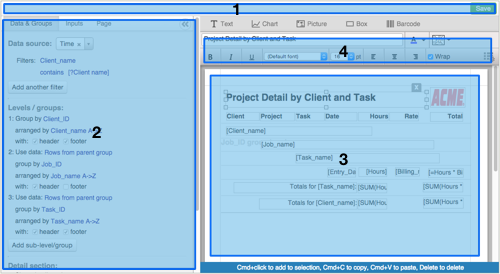
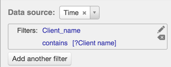
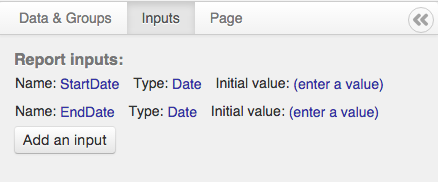
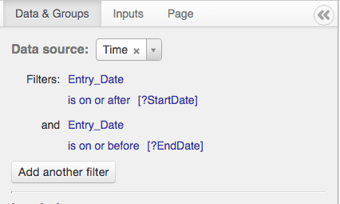
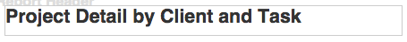
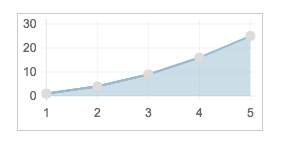
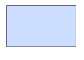
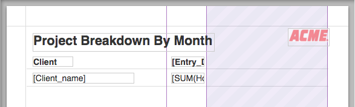

jsreports report designer documentation
This document describes the features of the jsreports report designer and explains how to use the designer to create custom reports.
Major areas of the designer
This diagram shows the major components of the report designer:

-
Header bar
Contains control buttons such as Save and Cancel. Not all buttons are always present, and in fact the header bar itself may not be present, depending on how the developer has configured the designer. -
Report setup panel
Contains all parameters that define the report structure, for example, which data source to use, grouping, and sorting of records within the report. -
Report canvas
The visual designer area where you arrange elements that make up the report. -
Element toolbar
Contains properties of the currently selected element, allowing you to customize each element. Only visible when a single element is selected.
Report setup
Selecting a data source
In this selector, choose which data source provides the records needed by your report. If you need to drill-down into another, linked data source (for example, you want to list branch offices and then for each branch office, obtain the employees for that office from a different data source), start with the outermost data source (in this example, the branch office list). You'll be able to define the drill-down data source separately in the Grouping section. Data sources are defined by the application developer.
Filtering the data source
You can restrict your report to use only some of the records from the chosen data source. In the filters section just below the Data Source selector, add one or more filters.
To edit an existing filter, hover over the filter and look for the "edit" and "delete" icons on the right.
For each filter, specify first the field in the data source containing the values that will be filtered, then the type of comparison that will be done, and finally the value to filter against.
To filter against a report input (see the section on defining inputs), use square brackets containing a question mark followed by the input name that you defined, for example: [?MyFilterName]

Levels and Groups
This area allows you to create sub-groupings of records. You can define nested groupings if needed, starting with the outermost grouping and working inward. Changing groupings will affect the structure of the report shown in the canvas.
Adding a grouping
Click the "add grouping" button to add a grouping.
The first, top-level grouping that you add will always use records from the report's base data source (chosen by the Data Source selector). You'll need to choose which field in the data source contains the values that will be grouped.
You can choose the order in which the resulting groups will be arranged. By default, this will match the grouping field. For example, if you selected to group by the State field for branch offices, by default the groups will be ordered alphabetically by the value in the State field. You can change this ordering by selecting a different field in the "arranged by" selector for the grouping.
Note that if you select a different ordering, you should choose a field that has the same value for each of the grouping values, because if there are multiple values in the "arrange by" field for each value in the grouping field, it is not clear which should be used to order that grouping.
Finally, you can choose whether this grouping level should have a header and footer. Use the checkboxes to turn on and off the header and footer. You'll see the report structure change in the canvas.
Drilling down across data sources
If you want to nest records from a different data source within records from the report's base data source, you'll need to add at least one grouping for the base data source first, then add a second grouping beneath that. In the second grouping, you'll have the option to choose a different data source.
When you change the data source to something other than "Use rows from parent group," you'll need to specify how to select records from the second data source. Choose the fields from the child and parent data source that contains values that must match in order to pull in records for that parent row.
For example, if you have a base data source listing branch offices, you might do as follows:
-
Create a top grouping level that groups by "OfficeID" -- this will give you one group per branch office, since the OfficeID is unique for each office
-
Create a sub-grouping that uses a different data source, "Employees".
-
Set the sub-grouping's filter fields as follows:
Use data: [Employees] where [EmployeeOfficeID] equals parent's [OfficeID]
This says that for each office (top-level grouping), you want to pull in records from Employees where the employee's EmployeeOfficeID (this field must exist in the Employees data source) matches the OfficeID in the outer data source.
Detail section
By default, the detail section lists each record from the data source. If you have not set up a grouping that pulls data from a second data source, then the detail records come from the report's base data source (chosen in the Data Source selector). If you did create a sub-grouping with a second data source, detail records will come from that data source.
You can hide the detail section by un-checking "Show detail section."
You can also specify the ordering of detail rows.
The Inputs tab
This tab allows you to define inputs (parameters) for the report. For example, you might want to define a report that summarizes sales for a time period, but you'd like to specify the time period when you run the report, without having to redesign the report.
To implement that example, you would add two inputs under the Inputs tab, named StartDate and EndDate, set to type "Date."

Then, back in the Data & Groups tab, create two filters that limit the report to rows within the range specified by the two inputs you created:

The Page tab
The Page tab allows you to define the layout of the report on the printed page.
You can choose either inches or millimeters (mm) as the base units for your report. The page dimensions and margins will be specified in terms of the units you choose.
By default, the page will be US Letter size (8.5 x 11 inches).
To change the paper size, choose a new option from the drop-down.
Page header and footer
The report can have a page header and footer that appear only in print mode (PDF), on each page.
Use the "page header and footer" checkboxes to turn on or off the page header and footer.
Within the page header and footer on the report canvas, you can use special syntax in text elements to print the page number and page count. For example, the expression
Results in:
This is page 1 of 27
Element types
Text element

The most common report element. Displays either static (fixed) text like a report title or dynamic, data-driven text using expressions.
Inserting data fields
Use square brackets around the name of the data field to insert the field value:
Totals
In a header or footer section, for a group or for the entire report, you can use expressions to compute totals over all the values in the group.
Calculations
To calculate a value from data fields, use square brackets and an equals sign, followed by the expression. Note that the field names inside the expression do not have square brackets around them individually.
Formatting numbers and dates
You can apply a format to a numeric or date value. Click the gear menu icon at the right edge of the element toolbar and look for the Pattern property. Here are some examples of patterns you can enter:
| Pattern | Applies to | Example output |
|---|---|---|
| $#,##0.00 | Number | $123,456.78 |
| #,##0 | Number | 1,234 |
| M/D/YYYY | Date | 9/1/2015 |
| MM/DD/YYYY | Date | 09/01/2015 |
| dddd, MMM D, YYYY h:mm a | Date | Tuesday, Sep 1, 2015 8:56 am |
Chart element

Displays a chart generated from the values in a grouping. Supported types are line, bar, and pie charts.
The chart control supports charting a single data series. The data values come from the value field you specify. For line and bar charts, the label field provides the X-axis labels. For pie charts, the label field appears in the legend.
Chart elements must be placed in a header or footer section, because they operate on grouped values. When a chart is placed in a report header or footer, the chart works on all records in the report.
Picture element
Embeds an image in the report. The set of available images is provided by the application developer.
Box element

A rectangle, useful for outlining or highlighting areas of the report.
Barcode element
A barcode that can encode values from your data source. Several types of barcode are available, including QR code, UPC, and Code 39, and others.
Like the Text element, the Barcode element allows free-form values to be encoded, including data fields from your data source. Use the same expression syntax you would use for Text elements.
Working with elements
Adding elements to the report
To add an element, click and drag from the element palette above the canvas onto the canvas.
Removing elements from the report
To remove an element, click on it to select it, then either press the Delete key on your keyboard or click the X that appears above the element. You can delete multiple elements at once by selecting multiple elements and then pressing the Delete key.
Moving and resizing elements
Click once on an element in the canvas to select it.
Selecting multiple elements
To select multiple elements, hold the Ctrl key (on Windows) or the Cmd key (on Mac) and single-click each element to add it to the selection. After you've selected all the elements you want, release the Ctrl/Cmd key.
When you have multiple elements selected, you can drag them all together by dragging any one of the elements as you would normally -- the other elements will move along with it.
Copying and pasting elements
Select one or more elements and press Ctrl+C (Windows) or Cmd+C (Mac) to copy the selection. Then press Ctrl+V (Windows) or Cmd+V (Mac) to paste a copy of the selection. The pasted elements will be selected and you can drag them to a new location as a group.
Dragging elements and snapping to the grid
Normally, as you drag elements on the canvas, they will snap to a grid to help you line elements up cleanly. To override that behavior and position elements at a pixel-precise level, hold the Ctrl key (Windows) or Cmd key (Mac) while dragging.
Pivot (cross-tab) reports
You can generate columns out of rows in your data source using the pivot feature. For example, you can create a column for each month based on the values in a date field. In the designer, you set up a single column and choose which field in your data source contains the values that define the columns. When the report runs, the column is repeated, once for each distinct value in that field in the data source, and any elements in that column are evaluated against only those rows matching that column's value.
Enabling the pivot feature
First, check the "Enable pivot" checkbox in the Data & Groups tab in the designer.
You'll see three vertical lines appear in the canvas to the right. These define the pivot column and how it will be rendered when the report runs. You can move these lines by clicking and dragging with the mouse.
Choosing a pivot field
Set the "Pivot field" setting to the field in your data source that contains the values that define the columns. In our example, we want a column for each month, so we set the pivot field to the date field in our data source.
Choose a bucket type (optional)
Our data source contains specific dates (each row records a sale on a specific day) but we don't want a column for each day, only for each month. So we tell jsreports to group all values for the same month into a single pivot column by selecting the "month" bucket type. Bucket type is only applicable for date-type fields.
Arranging the pivot column and area
The three vertical lines define two areas in the report. The left side (not shaded) is the pivot column. Any content in this area will be cloned when the report runs, once for each distinct pivot value. For example, if you're pivoting based on a date field and your bucket type is "month," you'll get one column per month in the data source. In the screenshot below, we've set up a column that has a header and a text element in the detail section.

The right-hand (shaded) area defines room reserved for the generated columns when the report runs. All columns will be shown regardless of whether you reserve enough space; the reserved space simply helps you visualize the final output and know where not to place other controls so they won't overlap with the pivot columns. Cloned elements will be shown in the reserved area to simulate the additional columns.
Which elements are cloned when the report runs?
Only elements that lie entirely within the pivot column (the left, unshaded side of the pivot region) are cloned.
What about elements that span the pivot area horizontally?
If you place an element so that its left edge is to the left of the pivot column and its right edge is to the right of the shaded reserved area, that element's width will be increased so that it spans all of the generated columns.
What happens when there are too many columns to fit in the reserved space?
When there are more values in the data source than fit in the reserved area, jsreports will expand the pivot area rightward to fit the extra columns. When rendering a report to the screen, the area will expand and a horizontal scrollbar will appear if needed. In print mode (PDF), the page width will be increased to fit all content onto a single page.
Using data in the pivot column
All element types can be used as usual in the pivot column. However, you should treat any element in a pivot column as if it were in a group header or footer, because the pivot column represents a set of values grouped together (for example, all rows for a given month). Therefore, you should usually use aggregate functions instead of referring to a field by itself. For example, in the pivot cell you should usually use
to total all the values for that month.
The column header is an exception to this rule. If you refer to a field name without an aggregate function in a column header, you'll get a single value from one of the rows matching that column, but which row is unpredictable. So if your report is pivoted by a date field with bucketing by month, you could write
in a text element in the column header, set its Pattern property to 'MM/YY' to get the month and year for that column. Since all values in the column have the same month and year, you'll get a predictable result.